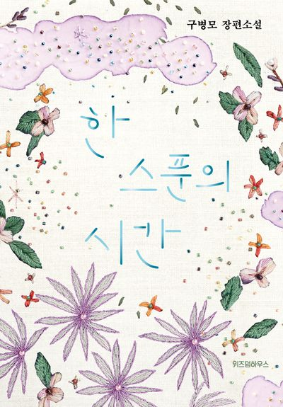

한 스푼의 시간
작가: 구병모
한 줄 평: 알고 싶지 않지만 그래도 알고 싶어
그는 인간의 시간이 흰 도화지에 찍은 검은 점 한 개에 불과하다는
사실을 잘 안다. 그래서 그 점이 퇴락하여 지워지기 전에 사람은
살아 있는 나날들 동안 힘껏 분노하거나 사랑하는 한편 절망
속에서도 열망을 잊지 않으며 끝없이 무언가를 간구하고 기원해야
한다는 사실도 잘 안다. 그것이 바로, 어느 날 물속에 떨어져
녹아내리던 푸른 세제 한 스푼이 그에게 가르쳐준 모든 것이다.